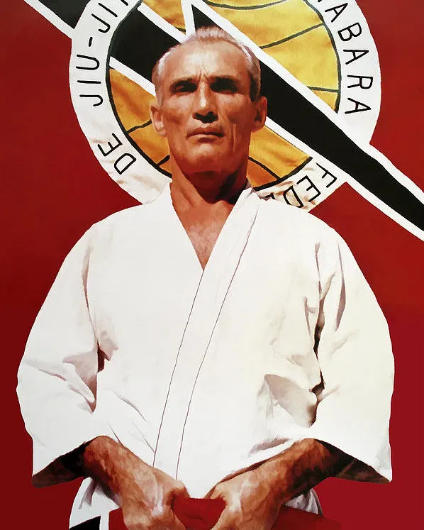

Was ist Brasilian-Jiu-Jitsu (BJJ)
BJJ ist eine brasilianische Kampfsportart, die im 20. Jahrhundert vom japanischen Judo von Helio Gracie

abgeleitet wurde. Ziel ist es, je nach Regelwerk, mit oder ohne Schläge
den Gegner zur Aufgabe zu zwingen. Im BJJ wird die vor Allem mit verschiedenen Würge- und
Hebeltechniken erreicht. Bei den Würgetechniken ist das Ziel die Blutzufuhr zum Gehirn
abzuschneiden und somit die Bewusstlosigkeit des Gegners herbeizuführen. Bei Hebeltechniken
greift man die Gelenke des Gegners an und versucht diese in unnatürliche Positionen zu manipulieren,
um somit den Gegner zur Aufgabe zu zwingen.
Helio Gracie Quelle: kingjiujitsu.com
Was is Mixed-Martial-Arts (MMA)
Mixed Martial Arts ist ein englischer Begriff und bedeutet auf Deutsch gemischte Kampfkünste. Im MMA werden Elemente aus zahlreichen Kampfsportarten kombiniert. Stark vertreten sind darin das klassische Boxen, Muay Thai, BJJ und das Ringen. Diese Kampfsportarten werden zusammengefügt, um einen möglichst effizienten Kampfstil zu erzeugen. MMA wird meist in einem Käfig ausgetragen bei dem Schlag-, Tritt-, Hebel- und Würgetechniken angewendet werden können.